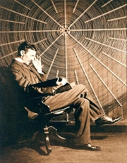
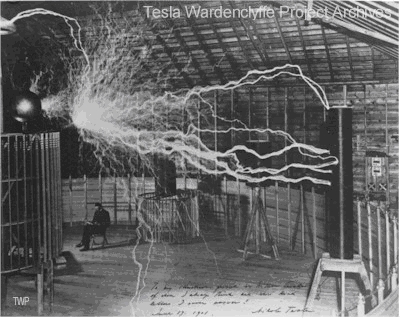
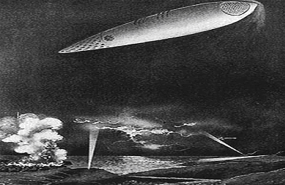

Motto: "pământul este de fapt viu, având vibrații electrice" (Nikola Tesla)
Marele Savant
 Nicolae Tesla (Nikola Tesla, 1856-1943), considerat de canalul Discovery ca fiind unul dintre "cei mai mari 100 de americani," este geniul sub care stă dezvoltarea actuală a omenirii. El a fost un mare vizionar, multe din ideile sale nefiind înțelese nici astăzi și constituind o permanentă sursă de dispută între marile puteri.
Ciudatele schimbări de climă și cutremure care s-au constatat în ultima vreme sunt considerate rezultatul unor aparate care au la bază descoperirile acestui mare inventator. Tesla a ajuns la concluzia că vremea ar putea fi controlată cu ajutorul energiei electrice. În primăvara lui 1898, Tesla demonstrează public dirijarea prin radio, la mare distanță, a unui vas fără echipaj. De numele său se leagă celebrul experiment Philadelphya și primul contact cu alte civilizații, savantul recepționând din spațiu un semnal radio repetat. Pentru această descoperire a fost ridiculizat de contemporani.
Tot lui îi datorăm și primul sistem de comunicație wireless, primii roboți, prima telecomandă, ideea de vehicul cu decolare verticală ș.a. Tesla a propus o schemă care arăta ca un science-fiction: un sistem global de comunicații fără fir pentru a transmite mesaje telefonice dincolo de ocean; pentru a transmite știri, muzică, rapoarte privind piața bursieră, mesaje private, a securiza comunicațiile militare, și care tranmitere de imagin în orice colț al lumii. "Când comunicația fără fir va fi aplicată pe scară largă, pământul va fi transformat într-un creier uriaș, capabil să răspundă în oricare colț al său." Această viziune a sa nu a fost realizată nici astăzi, la peste 60 de ani de la moartea sa. Nici marile sale realizări privind transmiterea energiei electrice fără fire nu au fost puse în practică. Mileniul acesta este fără îndoială mileniul Tesla.
Anii tinereții
Când zici Nicolae Teslea te gândești la istro-romanul devenit cetățean american, omul de știință și inventatorul prolific în domeniul electro și radiotehnicii, descoperitorul campului magnetic învârtitor. Tot el a inventat și sistemul bifazat de curent electric alternativ și a studiat curentul de înaltă frecvență. El a construit primele motoare asincrone bifazate, generatoarele electrice, transformatorul electric de înaltă frecvență etc. În atomistică, a cercetat fisiunea nucleelor atomice, cu ajutorul generatorului electrostatic de înaltă tensiune.
Este considerat de biografii americani ca fiind un emigrant de origine sârbă. În realitate el a fost istro-român, născut în noaptea de 9 spre 10 iulie 1856 ca fiu al preotului ortodox Milutin Teslea și al Gicăi Mandici. Familia tatălui era de grăniceri antiotomani, în fostul imperiu austro-ungar. Numele inițial de familie era Drăghici, dar el a fost înlocuit în timp, prin porecla de Teslea, după meseria transmisă în familie, de dulgher (teslari).
Henri Coandă îl prezintă pe marele inventator Tesla ca român bănățean din Banatul sârbesc, dar realitatea era că prietenul său Nicolae era istro-român din Croația. Coandă afirma: "Dacă acum, să zicem, 150 de ani, s-ar fi spus, ar fi venit cineva să ne spună cum spunea Teslea Nicolae, Teslea, românul din Banat: ‘Voi face lumină electrică, adică lumină, voi face asta mișcând o bucată de fier în fața unui fir de aramă,’ lumea l-ar fi închis ca nebun." Provincia Lica era locuită compact de istro-românii morlaci, încă din sec. XV-XVI. Gospici se află la câțiva kilometri de țărmurile Mării Adriatice, iar satul Similian la 12 km de Gospici, satul fiind patria lui Tesla. Tatăl său dorea ca el să devină preot, cu toate că el se simțea atras de științele exacte. La 17 ani, Tesla s-a îmbolnăvit de holeră și a obținut o concesie din partea tatălui său: bătrânul Tesla i-a promis că dacă va supraviețui, va primi permisiunea să urmeze cursurile de inginerie de la Politehnica din Graz (1875-1881), unde avea să își înceapă seria descoperirilor. Lucrează apoi la Budapesta, la Paris, în cadrul Companiei Edison (1882), Strasbourg (1884), după care pleacă în America.
Tesla a fost înntreaga sa viață obsedat de ideea electricității. La vârsta de 24 de ani are și primul mare răspuns. El însuși povestește: "Într-o după-amiază, veșnic prezentă în mintea mea, făceam o plimbare în parc, alături de un prieten, recitând poezii. Pe atunci, știam cărți întregi pe de rost. Una dintre acestea era Faust a lui Goethe. Soarele tocmai apunea, amintindu-mi de un pasaj celebru; ideea mi-a venit ca o străfulgerare de lumină, și într-o secundă adevărul era dezvăluit. Cu un băț, am desenat pe nisip diagrama pe care 6 ani mai târziu am prezentat-o în cadrul alocuțiunii de la Institutul American de Inginerie Electrică." Era motorul cu curent alternativ, o descoperire tehnologică care în curând avea să schimbe lumea.
Sosirea în America
Tesla ajunge în America având la el doar o scrisoare de recomandare din partea unui prieten al lui Edison din Europa. La sosire se arata complet șocat: "Ceea am lăsat în urmă era frumos, artistic și fascinant sub toate aspectele; ce am văzut aici era lipsit de finețe și inatractiv. America e cu un secol în urma Europei."
Electricitatea a fost introdusă în New York la finele anilor 1870. Lampa incandescentă a lui Edison a facut ca cererea pentru curentul electric să explodeze. Fabrica sa de curent direct din Pearl Street (Manhattan) devenea rapid monopol. Edison știa prea puțin despre curentul alternativ și nu vroia să învețe mai mult. L-a angajat totuși pe Tesla, oferindu-i 50.000 pentru perfectionarea generatoarelor și motoarelor electrice Edison. Tesla și-a îndeplinit sarcina dar… nu aprimit nici un cent în afară de următorul comentariu: "Când vei deveni un american complet matur vei ști să apreciezi o glumă americană." Șocat și desgustat, Tesla a demisionat imediat.
Ideile sale privind curentul alternativ pe care-l folosim azi aveau să se materializeze fiind sprijinit de un investitor. Patentele i-au fost apoi cumpărate de compania Westinghouse alături de care va continua până la realizarea "orașului luminilor." Cu prilejul Târgului Internațional de la Chicago deschis pe 1 mai 1893, cei 27 de milioane de vizitatori au văzut cum s-au aprins sute de lumini incandescente. Aceasta doar datorită invențiilor sale privind sistemele de curent alternativ. Era abia începutul luptei sale cu Edison…
Nikola Tesla – proiectul Niagara
Încă din copilărie, Tesla visase să poată folosi puterea apelor pentru producerea electricității. În mintea lui el vedea mereu roata care l-ar putea ajuta. Pe 16 noiembrie 1986, proiectul cascada Niagara, era finalizat după cinci ani de eforturi, momente de renunțare și neîncredere, crize financiare și milioane de dolari investiți. Prima hidrocentrală era acum funcțională. Autorul acestui proiect, care multora păruse o fantezie, era tocmai Tesla.
După succesul cu Niagara, Tesla a revenit la munca sa preferată-experimentarea. Întors la laboratorul său de pe Grand Street, în New York City, Tesla a fost absorbit în cercetarea electricității de înaltă frecvență. Un număr de descoperiri științifice începuse să arunce lumină asupra fenomenului frecvențelor înalte. În 1873, în Anglia, James Clerk Maxwell, a demonstrat matematic că lumina este o radiație electromagnetică-lumina era electricitate vibrând cu frecvențe foarte înalte.
Tesla și-a început cercetările privind frecvențele prin construirea unor generatoare rotative de curent alternativ care puteau ajunge la viteze mai mari ; dar când se apropiau de 20000 de rotații pe secundă, mașinile se rupeau în bucăți. Răspunsul a venit cu un instrument remarcabil cunoscut și azi drept bobina lui Tesla. Utilizând frecvențe înalte, Tesla a realizat primul neon și iluminarea fluorescentă. Tot el a realizat primele fotografii cu raze X.
Cine a inventat radioul?
Cele mai multe enciclopedii îl prezintă pe Marconi drept inventatorul radioului. Însă primul brevet pentru aplicații radio a fost obținut de către Tesla. La începutul lui 1895, Tesla era pregătit să transmită un semnal la 50 de mile, la Weat Point, New York .Dar în acel an, dezastrul a lovit. Un foc i-a mistuit laboratorul, distrugându-i munca.
În același timp, pe 12 decembrie 1901, Marconi a transmis și a receptat primele semnale dincolo de oceanul Atlantic.
Otis Pond, un inginer care lucra pentru Tesla, i-a spus "Se pare că Marconi ți-a luat-o înainte." Tesla i-a replicat: "Marconi e un băiat bun. Lasă-l să continue. Folosește 17 din patentele mele." Dar încrederea calmă a lui Tesla avea să fie zdruncinată în 1904, când Oficiul American pentru Patente, surprinzător a revenit asupra deciziilor sale anterioare și i-a dat lui Marconi patentul pentru inventarea radioului.
Motivele pentru această decizie nu au fost niciodată complet explicate, dar puternica susșinere financiar-bancară a lui Marconi în SUA ar putea fi o explicație.
Tesla continuă seria descoperirilor
În 1898 Tesla face o demonstrație care îi stupefiază pe participanții de la o expoziție la Madison Square Garden: prima navă controlată prin unde radio. Nava în miniatură se mișca pe un lac artificial, încât cei prezenți au crezut că o controlează cu mintea. Tesla își amintea "Când a apărut prima oară a creat o impresie pe care nici o altă invenție de-a mea n-a produs-o." Acestea au fost "începuturile unei rase de roboți, oameni mecanici, care vor face munca laborioasă a omenirii" după cum aprecia genialul inventator. Puțini însă își mai amintesc de această uriașă contribuție a sa ca fondator al roboticii.
Experimentul de la Colorado este poate evenimentul cel mai învăluit de mister și secrete.
 Ideea de la care a pornit acest experiment este legată de o furtună. Tesla povestește: "Observam undele staționare. Deși pare imposibil, această planetă, în ciuda dimensiunilor sale, se comportă ca un conductor de dimensiuni mici. Semnificația extraordinară a acestui lucru în ceea ce privește transmiterea energiei wireless, mi-a devenit clară. Nu numai că puteam transmite orice mesaj telegrafic fără fire oriunde, dar și să imprim la orice distanță de pe glob slabele modulații ale vocii umane, mai mult, să transmit energie, în cantități nelimitate oriunde pe glob, fără pierderi."
Aici Tesla a construit o stație experimentală, cu 2 bobine absolut uriașe. Și astăzi se mai pune întrebarea "A reușit Tesla să transmită energia wireless?" Într-un articol Tesla a susținut că a reuțit să aprindă de la distanță, fără fire, lămpile orașului, producând tensiuni de peste 12 milioane de volți. Cert este că oamenii au putut vedea cel mai mare fulger produs vreodată de mâna omului: peste 40 metri. Tunetul s-a auzit la o distanță de peste 22 de mile, iar o aură albastră a înconjurat întreaga zonă.
Oameni ăia au putut vedea pe stradă mici scântei electrice, fluturii aveau aripi înconjurate de lumină, iar la robinet curgeau pe lângă apă, curenți electrici. Tesla era un adevărat vrăjitor. Tesla a ajuns la concluzia că atunci când fulgerul lovește pământul, creează unde puternice care traversează pământul.
Dar pământul nu este numai conductor, ci și puternic electrizat, cu un potențial imens. Dacă s-ar reuși creșterea amplitudinii încărcăturii energetice a pământului prin mijloace artificiale, energia electrică ar putea fi oriunde extrasă direct din pământ.
Timp de 9 luni Tesla a continuat seria experimentelor. Uimitorul inventator a descoperit frecvența de rezonanță a pământului, reușind să producă primul cutremur artificial. El a plasat un oscilator în pământ, care a rezonat la aceeași frecvență cu a Pământului. Abia după aproape un secol, știința a reușit să demonstreze veridicitatea acestei teorii. Completarea făcută de Tesla este absolut surprinzătoare și azi: între război și cutremure există o legătură directă. Exploziile de mină, torpile, rachete, ca să nu mai vorbim de experimentele nucleare, dezvoltă forțe reactive uriașe care se propagă pe întreg globul. Efectul lor poate fi multiplicat extraordinar de mult prin rezonanță. "Acțiunea combinată a exploziilor de orice natură poate produce mișcări tectonice în orice parte a globului, și un cutremur dezastruos în Italia poate fi rezultatul unei explozii în Franța. Faptu că omul poate produce astfel de convulsii ale pământului nu poate fi pus la îndoială. Depinde dacă o face cu un scop bun sau rău." (Nicolae Tesla). Asta mă duce cu gândul la valul de cutremure, inundații, tornade care au afectat pământul în ultima vreme. Aș adăuga: da oamenii, în inconștiența lor, pot distruge pământul.
Tot la Colorado, Tesla a receptat un semnal repetat din spațiu, susținând astfel existența altor civilizații în spațiu. Ar fi practic imposibil ca din miliardele de planete, una singură să fie locuită: Pământul. Pentru aceste afirmații a fost ridiculizat în presa vremii.
Când s-a întors la New York, de la Colorado Spring, a scris un articol senzațional pentru revista Century Magazine. În această viziune detaliată și futuristică, el a descris un mijloc de a captura (tapping) energia solară cu ajutorul unei antene. El a sugerat că vremea ar putea fi controlată cu ajutorul energiei electrice. A vorbit despre mașini care ar face războiul imposibil și a propus un sistem global de comunicație fără fire. Pentru cei mai mulți oameni aceste idei erau practic de neînțeles, dar Tesla nu putea fi subestimat.
Articolul a atras atenția unuia dintre cei mai influenți oameni, J. P. Morgan. Un oaspete frecvent în casa lui Morgan, Tesla a propus o schemă care arăta ca un science-fiction: "un sistem global" de comunicații fără fir pentru a transmite mesaje telefonice dincolo de ocean; pentru a transmite știri, muzică, rapoarte privind piața bursieră, mesaje private, a securiza comunicațiile militare, și care transmitere de imagini în orice colț al lumii. "Când comunicația fără fir va fi aplicată pe scară largă, pământul va fi transformat într-un creier uriaș, capabil să răspundă în oricare colț al său," i-a spus Tesla lui Morgan.
Morgan i-a oferit lui Tesla 150,000 de dolari pentru a construi un turn de transmisie și o fabrică de energie. O sumă mai realistă ar fi fost 1,000,000, dar Tesla a acceptat și și-a început munca imediat, însă turnul viselor sale nu a putut fi realizat pentru că Tesla a pierdut finanțarea lui Morgan, investitorul dorind rezultate imediate.
Tesla "un mistic mereu genial"
Lumea devine pentru Tesla "o lume oarbă, lipsită de curaj și neîncrezătoare," dar nu își pierde nici o clipă încrederea în ideile sale.Este tot mai retras, și petrece mult timp în parc hrănind porumbeii. Către sfârșitul lui 1920, Tesla a început să se împrietenească cu un binecunoscut poet german și mistic, George Sylvester Viereck. Deși era aproape un pustnic, tesla lua uneori parte la petrecerile de cină festivă oferite de Viereck și soția sa. Cu un talent înăscut. Tesla a scris un poem straniu, pe care l-a dedicat prietenului său. Se numea "Fragmente de bârfă olimpiană" și era o critică acidă a oamenilor de știință din zilele acelea. Încep să apară zvonuri, fiind, întocmai ca și Eminescu, acuzat de nebunie. De ce trebuie oare să numim pe cei ce nu-i înțelegem "nebuni"?
Ideile sale continuă să vină, parcă din science-fiction pentru contemporanii săi, dar chiar și pentru noi azi. Tesla descrie pentru prima dată radarul. Ideea lui era de a transmite unde radio de înaltă frecvență, care să se reflecte din structura navei pe un ecran fluorescent. Ideea era mult prea avansată pentru acele vremuri, dar era prima descriere a radarului. Tot el a fost primul care a vorbit de o eră în care vehicule de zbor fără aripi, teleghidate, puteau fi trimise cu încărcătură explozibilă asupra dușmanului.
O armă anti-război
Tesla nu a fost un om al viitorului, dar și un mare filosof. De fapt toate proiectele sale au avut ca scop declarat progresul umanității. "Pacea nu poate veni decât ca o consecință a iluminării umanității." Cu toată evoluția tehnică a umanității, evoluția morală este încă departe. Suntem precum un uriaș cu membre puternice și creier slab.
El s-a gândit la mijloc tehnic pentru a pune capăt problemelor de război. Credea că războiul poate fi transformat "într-un simplu spectacol al mașinilor." În 1931, la o conferință de presă, a anunțat că este pe punctul de a descoperi o nouă sursă de energie. Întrebat referitor la natura sursei, Tesla a replicat "Ideea mi-a venit ca un șoc extraordinar. În acest moment pot doar să spun că va veni dintr-o sursă complet nouă și nebănuită."
Norii războiului se abăteau din nou asupra Europei. Pe 11 iulie 1934, pe prima pagină a New York Times se putea citi mare "La 78 de ani, Tesla descoperă o nouă rază mortală." Articolul raporta că noua invenție "va trimite particule de atmosferă concentrate prin aer, cu o energie atât de mare încât va doboară o flotă inamică de 10000 de avioane de la o distanță de 250 de mile." Tesla declara că noua rază mortală va face războiul imposibil, oferind fiecărei țări un "zid chinezesc invizibil." Era de fapt un scut energetic, care și azi pare doar un produs al imaginației. Din păcate ideea sa de pace a fost vânată în tot acest timp pentru a fi transformată în cea mai redutabilă armă. Chiar după ce a anunțat că a finalizat cercetările privind "raza mortală," în 1943 Tesla moare, luând secretul cu el în mormânt. Era în plin război mondial. Tocmai de aceea moartea sa nu este lipsită de controverse.
Motto: "Omul de știință nu țintește un rezultat imediat. El nu se așteaptă ca ideile sale să fie repede acceptate. Munca lui este asemeni acelui ce plantează pentru viitor. Datoria lui este să aștearnă fundația pentru cei ce vor veni, și să le arate drumul. El trăiește, muncește și speră."
Moartea lui Tesla – misterul documentelor
La scurt timp după marea sa descoperire, Tesla moare, în plin război mondial. Invenția lui putea schimba oricând soarta războiului, deci era firesc ca documentele și notele savantului să devină o "comoară" vânată de serviciile secrete. FBI-ul s-a pus în mișcare, de teamă ca acestea să nu ajungă pe mâna Axei sau a sovieticilor.
A doua zi după moartea lui Tesla, dimineața, nepotul acestuia, Sava Kosanovic – oficial iugoslav dornic de avansare, suspectat că ar avea legături cu partidul comunist din țara sa – se grăbea să ajungă în camera unchiului său de la hotelul New Yorker. Până când a ajuns el, corpul lui Tesla fusese deja ridicat, iar Kasanovic bănui că cineva scormonise deja prin lucruri. Avea dreptate: lipseau documente tehnice și un caiet negru cu câteva sute de pagini, câteva dintre ele marcate "Guvernul" – pe care el știa că unchiul său le păstra.
Documentele rămase au fost preluate de autorități și analizate de Biroul de Cercetare științifică și Dezvoltare. Concluzia dată publicității era menită să distragă atenția de la importanța uriașă a muncii savantului: "Ideile și eforturile lui Tesla din ultimii 15 ani au, în principal, un caracter speculativ, filosofic și într-o oarecare măsură de promovare, adeseori referindu-se la producerea și transmiterea fără fire a energiei electrice; nu sunt prezentate metode și principii noi, solide și funcționale pentru a le pune în practică."
În 1952, restul de documente și bunuri ale lui Tesla au fost trimise lui Sava Kosanovic, la Belgrad. Aici a fost creat un muzeu în onoarea marelui inventator. Timp de mulți ani, în timpul regimului comunist al lui Tito, sovieticii au fost singurii care au avut acces la documente.
Pe tot parcursul Războiului Rece, confruntarea s-a dat în jurul realizării practice a armelor și surselor de energie propuse de Tesla. Se urmărea crearea unei arme care să protejeze America de un eventual război nuclear. Oficial, proiectul a fost un eșec. În realitate, nu se știe până unde au mers realizările. Ideile lui Tesla sunt și astăzi insuficient înțelese și valorificate. Să nu uităm că el a propus ca sursă de energie forța gravitațională sau magnetismul, ori că este părintele armelor numite azi "psihotronice" care presupun un control al minții umane prin intermediul undelor de înaltă frecvență, cu efectul îmbolnăvirii subite sau morții.
Mașina de zbor Tesla: OZN-ul de azi
 Tesla a brevetat o mașină de zbor (foto) care prin descrierile făcute de el însuși este asemănătoare cu ceea ce noi numim azi OZN. Mașina se poate deplasa în orice direcție, are decolare verticală și folosește un motor alimentat wireless cu energie electrică, asfel că poate staționa mult timp în aer. Tesla o destina uzului militar, dar și celui civil, pentru a înlocui…automobilul. Este foarte probabil că ea a fost de mult fabricată, dar din considerente economice și de altă natură, nu a trecut în uzul frecvent.
Ce ar însemna de exemplu o astfel de mașină pentru industria automobilului sau cea aeronautică? La fel ca mai toate marile descoperiri, ea va fi utilizată pe scară largă cu mari întârzieri, poate chiar de secole. Cea ce noi numim azi progres tehnologic avansat, s-a realizat în urmă cu un secol, dar abia acum a ajuns pe piață. Este păcat că interesele financiare, care impun exploatarea la maxim a unei descoperiri, și abia apoi perfecționarea, întârzie atât de mult progresul omenirii.
Descrierea acestui aparat o va face chiar Tesla, în numeroasele articole publicate în marile reviste americane: "În urmă cu 20 de ani, credeam că voi fi primul om care va zbura, că eram pe punctul de a realiza ceva unic. Munca mea se desfășura în domeniul electricității și nu mi-am dat seama că motoarele cu benzină se dezvoltaseră atât de mult încât puteau face un avion fezabil. La vremea aceea, lucram la transmisia fără fire a energiei electrice. Ideea mea era să construiesc o mașină de zbor propulsată de un motor electric, alimentat cu energie de la stațiile de la sol. Încă nu am realizat aceasta, dar sunt sigur că o voi face la timpul potrivit. Când am aflat că am fost anticipat de cercetători din alte domenii, am început să studiez problema zborului din alte unghiuri. Devenea o problemă de mecanică, nu de electricitate. Știam că există surse de energie mai bune decât cele de acum, și prin eforturi îndelungate, după ani de zile, am înțeles posibilitatea utilizării principiilor vâscozității și aderenței fluidelor în construcția motorului meu."
"Acum că am realizat motorul, următorul pas este mașina perfectă de zbor." Un avion care să folosească motorul dumneavoastră?, a întrebat reporterul. Răspunsul lui Tesla este surprinzător și acum, după aproape 100 de ani. "Mașina de zbor a viitorului – mașina mea de zbor – va fi mai grea decât aerul, dar nu va fi un avion. Nu va avea aripi și nici propulsoare. Va fi solidă și stabilă. Văzută la sol, nici nu îți dai seama că e un aparat de zbor. Totuși, va putea zbura în orice direcție în perfectă siguranță, la viteze mult mai mari decât cele atinse până acum, în ciuda curenților de aer verticali și a golurilor de aer. Va putea urca și în astfel de curenți dacă e nevoie, staționa în aer perioade mari de timp, chiar și la viteze foarte mari ale vântului. Puterea sa de zbor nu va depinde de aripi, ca la păsări, ci de acțiuni mecanice pozitive."
"Prevăd o dezvoltare a mașinilor de zbor care să o depășească pe cea a automobilului. Mă aștept la o contribuție importantă a domnului Ford la realizarea acestui progres. Problema locurilor de parcare și a drumurilor aglomerate va fi rezolvată. Turnuri de parcare se vor înălța în marile orașe, iar șoselele se vor înmulți doar atât cât este nevoie. În final, șoselele vor deveni inutile pentru că civilizația va abandona roțile pentru aripi."
"Copilul visurilor lui Tesla," cum numea inventatorul mașina sa de zbor, așteaptă să fie redat oamenilor.
Previziunile lui Tesla
Cu toții am auzit de previziunile lui Nostradamus, dar puțini știu că Tesla a văzut cu claritate științifică și a contribuit la crearea viitorul nostru. Viziunile sale aruncă lumina peste multe din actualele noastre probleme.
"Potrivit unui teorii care a fost acceptată, fiecare atom se diferențiază printr-o mișcare de rotație continuă de eter, întocmai ca un vârtej într-un lac liniștit. Eterul, atunci când este pus în mișcare, devine materie. O dată ce mișcarea se oprește, eterul revine la starea sa normală. Apare astfel extraordinara posibilitate ca omul să poată să facă materia să apară și să dispară, cu condiția să aibă instrumentele potrivite pentru a iniția și a opri aceste vârtejuri de eter. La comanda sa, aproape fără nici un efort, vechile lumi vor dispărea și altele noi vor înflori. Omul ar putea modifica mărimea planetei, controla anotimpurile, modifica distanța față de Soare, sau călăuzi eterna sa călătorie pe orice drum din Univers. Ar putea provoca ciocniri de planete pentru a produce sori și stele, căldura și lumina sa.; ar putea crea viața în toate formele sale infinite. A realiza prin propria voință nașterea și moartea materiei, ar fi cea mai mare reușită a omului, transformându-l în stăpânul creației fizice, împlinindu-și astfel destinul său."
"Dacă reușim să eliberăm energia din atomi sau să descoperim un o sursă de energie ieftină și inepuizabilă, disponibilă în orice zonă de pe glob, această realizare, în loc să fie o binecuvântare, poate aduce dezastrul omenirii, determinând disensiuni și anarhie, cea ce va duce în final la mult urâtul regim al forței. Cel mai mare bine vine din dezvoltarea tehnică care duce la unificare și armonie, iar transmiterea wireless se înscrie în această linie. Prin intermediul acestui sistem, vocea umană va putea fi reprodusă oriunde, iar fabricile vor furniza energie de la mare depărtare de hidrocentrale; mașinile aeriene vor fi propulsate în jurul Pământului fără oprire, iar energia Soarelui va fi controlată pentru a crea lacuri și râuri pentru a fertiliza marile deșerturi."
"(…) va fi posibil pentru națiuni să lupte fără armate, nave sau arme, cu arme mult mai teribile, care au o capacitate de acțiune distructivă nelimitată. Un oraș, aflat la orice distanță de inamic, poate fi distrus – și nici o forță din lume nu poate opri aceasta. Dacă vrem să prevenim o calamitate apropiată și transformarea globului într-un infern, ar trebui să accelerăm dezvoltarea mașinilor zburătoare și a transmisiei energiei wireless fără de întârziere, cu toată puterea și resursele națiunii." Tesla știa de bomba atomică, întrucât Einstein l-a vizitat în noiembrie 1933, aflând de cercetările lui asupra fisiunii nucleare. Este foarte probabil, că beneficiind de arhiva lui Tesla, după moartea acestuia, Einstein să fi realizat bomba atomică. Iar pericolul distrugerii pământului este un pericol real al secolului nostru, când orice nebun poate declanșa un război atomic. Și ce bine seamănă noile arme cu cele descrise de Tesla! Nu sunt oare ele produse având la bază cercetările sale? Vă las să vă răspundeți singuri.
"Implicarea femeii în noi domenii de acțiune, uzurparea graduală de către ele a conducerii bărbaților, va disipa sensibilitatea feminină, va reduce instinctul matern, astfel că maternitatea și căsătoria vor părea neplăcute și civilizația umană se va apropia tot mai mult de civilizația perfectă a stupului de albine. Urmează o nouă ordine a sexului – conducerea de către femei. Veți comunica instantaneu, printr-un simplu echipament de buzunar. Avioanele vor zbura fără piloți, ghidate de la sol prin unde radio. O cantitate uriașă de energie va fi transmisă fără fire. Cutremurele vor deveni din ce în ce mai frecvente. Zonele temperate vor deveni foarte reci sau toride. Și cele mai multe dintre acestea sunt foarte aproape să se producă."
Când se va anunța că s-a descoperit transmisia energiei fără fir, vom ști că este de fapt o realizare veche a lui Tesla. Iar restul, le trăim la aproape un secol de când marele inventator le-a descris…
Tesla ne-a oferit și răspunsul la întrebarea fundamentală, pe care ne-o punem toți cei nu ne considerăm urmași de maimuțe "Ce este viața?."
"Știința modernă declară: Soarele este trecutul, Pământul prezentul, iar luna viitorul. Dintr-o masă în flăcări ne-am născut, și într-o masă înghețată o să ne transformăm. Legea naturii este nemiloasă, și suntem în mod irezistibil atrași de destinul nostru. Lordul Kelvin ne dă o șansă redusă de viață: circa 6 milioane de ani, după care lumina Soarelui se va stinge, iar Pământul nostru va deveni un deșert de gheață, căzând în noaptea eternă. Totuși, va rămâne o strălucitoare scânteie de viață, existând șansa să reaprindă viața pe o stea îndepărtată. Această posibilitate există într-adevăr." Iată și răspunsul: originea spațială a omului conferă răspunsuri la multe din marile mistere ale omenirii. Poate și de aceea, ea nu se vrea a fi cunoscută.
Diana Iane
January 25 & 31, February 4, 2006
© 2006 AlterMedia